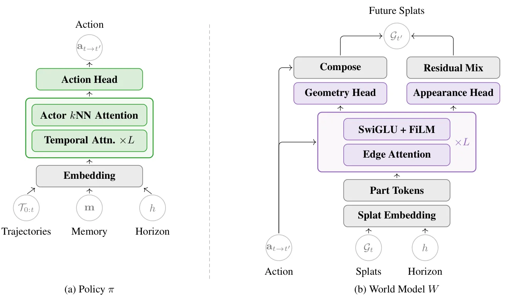
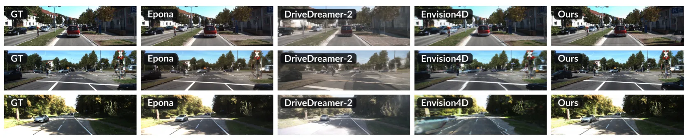
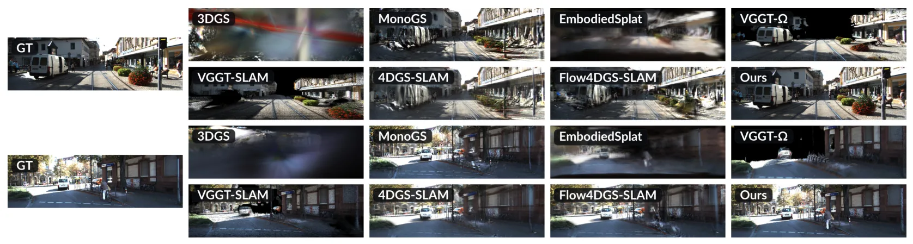
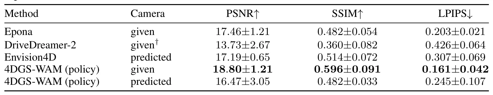
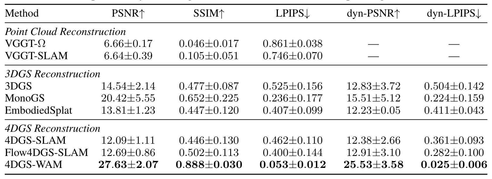

4DGS-WAM：基于四维 Gaussian Splatting 的面向对象世界动作模型4DGS-WAM: Bridging Past and Future with an Object-Centric World Action Model based on 4D Gaussian Splatting
覆盖 4DGS、动态场景和对象中心世界模型，与动态建图和机器人预测紧密相邻；尚需核查方法成熟度和实验规模。
一句话工作总结
将持久三维表示与动作预测连接起来，对动态 SLAM 的对象级地图和预测式规划有启发，但论文标注为 work in progress。
摘要
4DGS-WAM 将动态对象与静态背景分开建模，用策略模型预测动作、世界模型预测对象高斯的变换；未来状态复用已观测背景，减少重复生成，并在 KITTI-MOT 上评估短时预测与过去重建。
Current world action models (WAMs) typically operate on 2D visual data. These models can achieve exceptional visual quality, but they lack explicit spatial structure for individual objects and repeatedly process redundant background content. Although point clouds can represent the world in 3D space, they can be difficult to align and accumulate across viewpoints. In this paper, we leverage an explicit 4D Gaussian Splatting (4DGS) representation that separately models dynamic objects and the static background of a scene. For dynamic objects, we use a policy model to predict future actor actions and a world model to predict transformations of their observed Gaussian splats. The static background need not be regenerated for future states, as much of it has already been observed in past frames. This forms an object-centric world action model, which we name 4DGS-WAM. It lifts 2D observations into a persistent 4D representation so that previously observed static content can be reused during future prediction. Future-state extrapolation can then focus on modeling the evolution of dynamic objects. Experiments on KITTI-MOT evaluate short-horizon prediction and past reconstruction.
中文解读摘录
- 中文名：PIVOT：面向真实世界三维重建的多轨迹位姿、内参与新视点评测数据集和测试平台
- 方向：三维重建、NeRF、3DGS、位姿与相机内参评测。
- 要点：针对机器人和无人机环境中轨迹、位姿和内参不理想的问题，提供多轨迹采集数据、测量位姿与 COLMAP 优化位姿、标定与优化内参，并分别评估已见/未见轨迹、位姿来源和内参来源的敏感性。
- 判断：对真实部署下的重建评测很有价值，尤其适合检查“训练轨迹内插”是否掩盖了新轨迹泛化问题；不是 SLAM 算法本身。
图表/页面预览


{kind=link}

{kind=link}

{kind=link}

{kind=link}

{kind=link}
